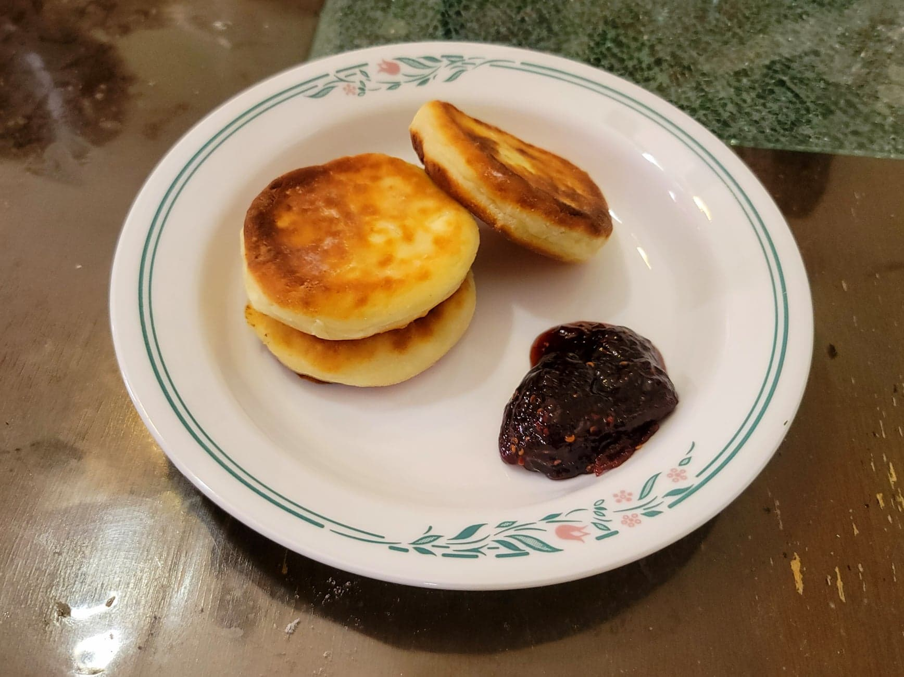

Syrniki

Ingredients:
- 1 lb Tvorog
- 2 Eggs
- 60 g Flour + more for dredging
- 1/4 cup Sugar
- 1/2 tsp Salt
- Optional: 1/2 cup Raisins
- 4-8 tbsp Oil for frying
Instructions:
- Crumble the tvorog into a bowl with a fork. Add the eggs and then cream together with an electric hand mixer.
- Add the flour, sugar, and salt and mix with the electric hand mixer until combined. Fold in the raisins if using.
- Form the dough into patties about 3/4 inch thick and dredge in the extra flour. Optionally, use a 2-3" cookie cutter as a mold. Repeat until there is no more dough.
- Heat oil in a frying pan over medium-low heat. There should be enough oil for there to be a thin layer of oil at the bottom of the pan. Cook for 4-5 minutes per side, or until golden. Then place on a paper towel lined plate to absorb excess oil before transferring to a serving plate.
- Serve immediately with maple syrup, jam, and/or sour cream.